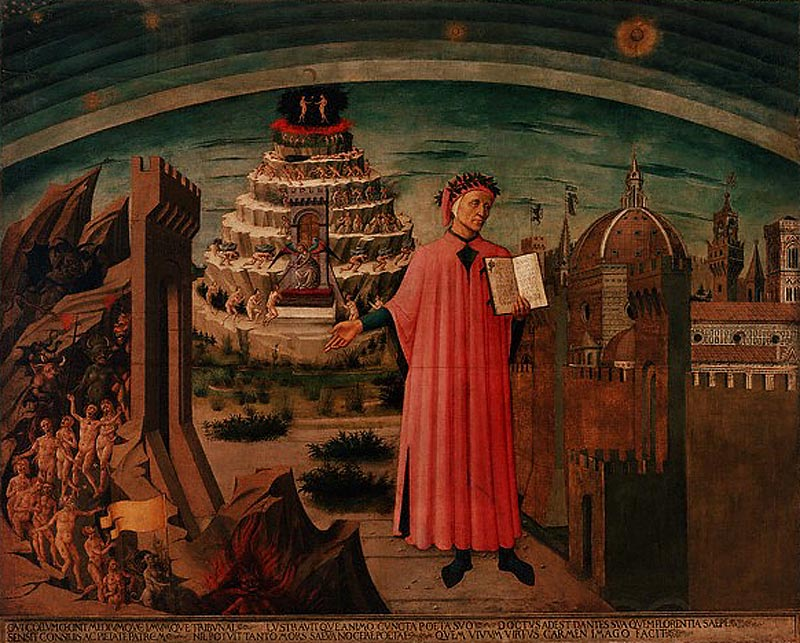

| 
Dante e seus Poemas por Domenico di Michelino (1460). A ilustração mostra Dante, ao centro, com a Divina
Comédia. O Inferno está à sua direita. A montanha do Purgatório está ao fundo, e em seu pico está o Paraíso
Terrestre. Acima, o céu - o Paraíso.
Imagem pertencente à Corbis Image Collection.
|